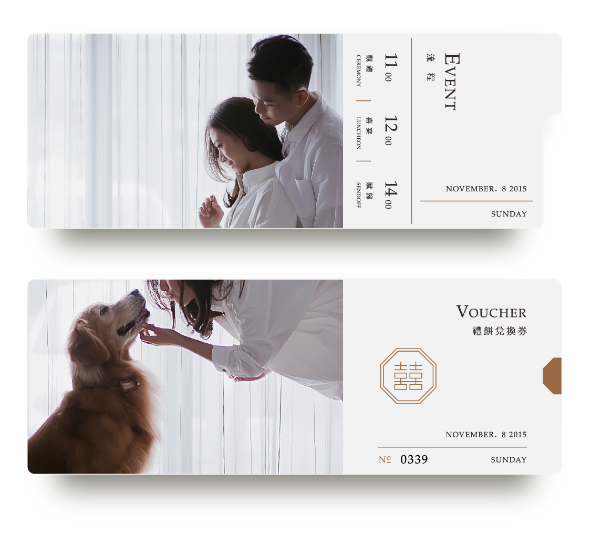
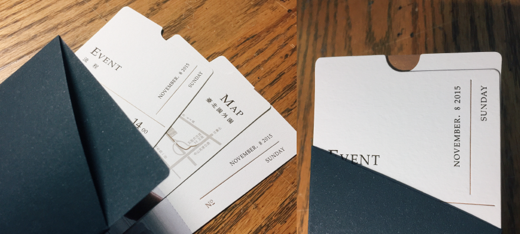

Gang's Wedding invitation


喜帖分成三個部分：交通資訊、婚宴時程、囍餅券。 好友結婚組成一個家庭，比較不同的是家庭成員還有一位—黃金獵犬小捌，因此將小捌作為設計的重點之一。
三張喜帖分別為女方對小捌、男方對小捌，男女方看著小捌，由小捌串連起一個完整的家庭。
雖然在製作之前已經有過凸板印刷的印製經驗，但四色印刷的經驗不足（照片部分），照片部分的印刷因紙張材質吃足苦頭。 為了保有喜帖拿在手上的紙張纖維觸感，在塗布多寡與顏色鮮豔之間取捨，最終選擇微塗布的紙張。 最終的成品好友很喜歡，好險。



